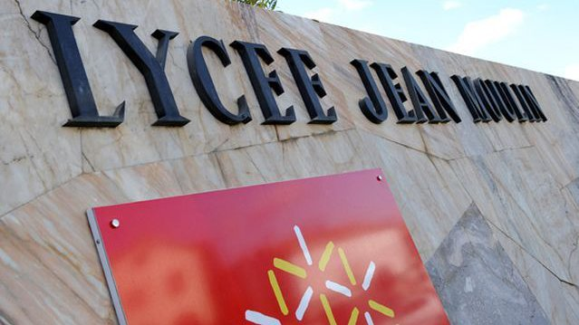
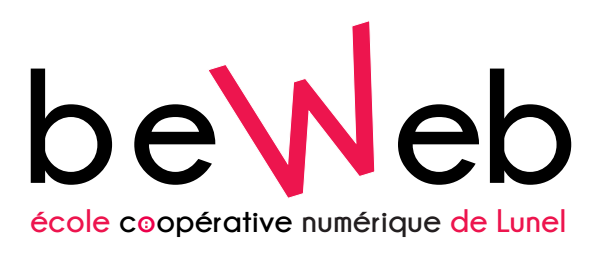
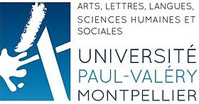

Etablissement scolaire
De la seconde a la 1 ère S cursus scolaire général classique
Réorientation en bac technologie STI2D avec obtention d'un bac. Specialité SIN (électronique et informatique)
Ecole regional du numérique BEWEB dans le developpement logiciel et web
2 ans en AES (administration droit et social) a l'université du guesclin a beziers
